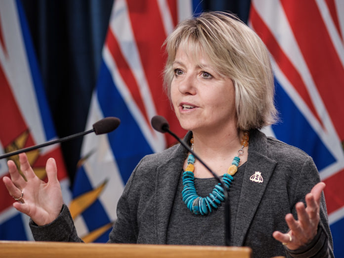
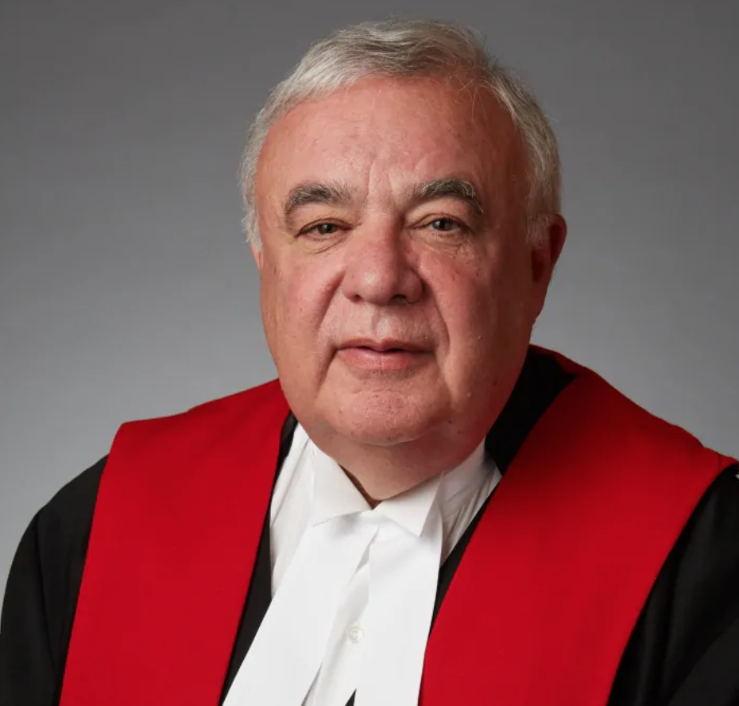
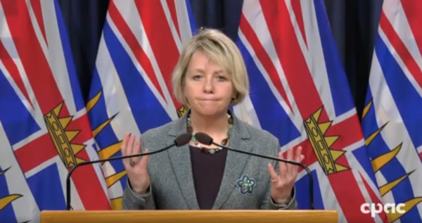

COVID 19 - Bonnie Henry Loses Attempt to Shut Down Churches, Is Also a Cunt
May 5th, 2021
I stumbled upon this story from February yesterday, when trying to find out more information about Judge Michael Tammen, specifically more pictures. I couldn't find more pictures. What I found out, not really relevant to Tammen, was perhaps more interesting.
The Breaker:
TDC_ARTICLE_START
It was a case of once bitten, twice shy.
B.C. Supreme Court Chief Justice Chris Hinkson refused on Feb. 17 to grant Dr. Bonnie Henry and the B.C. NDP government an order to shut down three evangelical churches and arrest their pastors and parishioners. For more than three months, the Fraser Valley Christians have flouted pandemic bans on public gatherings. Hinkson threw out Henry’s application because those who broke a port blockade injunction a year ago were not held accountable and he feared a repeat.
TDC_ARTICLE_STOP
Bonnie Henry, Huge Cunt
Aca-scuse me? This fucking cunt bitch is attempting to have Christians thrown in jail now. Okay Bonnie.
More germaine to this story, the judge is basically embarassed to have the BC Prosecution Service just ignore the judiciaries orders, as they did in the past. Why did they ignore their orders to arrest people? Because those people were antifa doing illegal blockades of a Port Authority Entrance right here in the Fraser Valley. I'll let the judge explain.
TDC_ARTICLE_START
“I am left to wonder what would be achieved by the issuance of an injunction in this case,” Hinkson wrote. “If it were granted and not adhered to, would the administration of justice yet again be brought into disrepute because the B.C. Prosecution Service considers that it would not be in the public interest to prosecute those who refused to adhere to the orders sought from this Court?”
Hinkson’s written judgement, which followed a Feb. 12 hearing, cited the arrest of six people for defying a court order to ban blockades at Vancouver Fraser Port Authority entrances in Vancouver and Delta. The protesters were part of the nationwide Shut Down Canada anti-pipeline campaign in February 2020.
The B.C. Prosecution Service had ample evidence to charge the protesters and even determined there was substantial likelihood of conviction. Yet, it did an about-face.
“Despite the finding of [Justice Michael Tammen] that the blockade he had dealt with constituted a direct attack on the rule of law by an organized group voicing disapproval of a court order, the reputation of administration of justice was brought into disrepute because no consequences were pursued.”
TDC_ARTICLE_STOP
Judge Christopher Hinkson
Basically what happened is what I described above. This judge is somewhat peeved, an appropriate word for these nonces, also an appropriate word, at the BC Prosecution Services because they just... decided that "nah, fuck you, we're not prosecuting these antifa law breakers." As a result, the judges ruling can be summed up as "well sure these Christians probably broke the COVID 19 restrictions, but I guess that's just a thing that happens now."
I'm not trying to oversell this Chris Hinkson character. He's probably a gigantic piece of shit, like most judges. It might be that he's doing an internal power play thing, where he doesn't think that BC Prosecution Services should be usurping the judiciaries power like that. That strikes me as being most plausible, not that he's a great guy interested in doing the right thing.
TDC_ARTICLE_START
Riverside Calvary Chapel of Langley, Immanuel Covenant Reformed Church of Abbotsford and Free Reformed Church of Chilliwack, with the support of the Alberta-based Justice Centre for Constitutional Freedoms, had already scheduled a March 1 court hearing. They want a judge to overturn the violation tickets they have received because they say the public health order banning church services violates the Charter of Rights and Freedoms guarantees on freedom of peaceful assembly and freedom of religion.
The province’s application conceded the pandemic rules take away fundamental freedoms, but should be allowed because they are subject to reasonable limits in a democratic society. Public health trumps individual liberties, the government contends.
Yet, the churches’ lawyer, Paul Jaffe, noted the contradiction. Pubs and gyms remain open, despite those activities not being mentioned in the Charter. After the Justice Centre’s legal challenge, Henry amended the public health order to allow public protests.
TDC_ARTICLE_STOP
Lawyer Paul Jaffe
Paul Jaffe is a good lawyer, and our goy adjacent. He's represented Barry Neufeld, of "R Word" Fame on at least one occasion.
As to the specifics of this, it just shows once again what an absolute joke these COVID19 "shutdowns," really are. Completely arbitrary, and designed to destroy certain politically connected businesses, while allowing others to remain open. To allow billionaires to strip the assets of struggling small businesses while people like you or I get impoverished.
TDC_ARTICLE_START
The government said the services generally occur indoors with a large number of people from different households, lasting longer than 15 minutes, causing a higher risk of spread and infection of the disease among high risk groups, such as the elderly, and involve talking and singing, which help spread the virus.
TDC_ARTICLE_STOP
DR. BONNIE HENRY SHRUGS AFTER ADMITTING A MAJOR FRASER HEALTH DATA ERROR IN NOVEMBER
But... you let gyms and pubs remain open. Do gyms and pubs not have people inside for longer than - you know what? I'm giving this cunt way too much credit. Yeah this is purely political, and that's that.
Anyway, that just goes to show you what's going on here in BC. Antifa outright break very legitimate, and popular, no-blockade orders, and get no prosecution. However, as a silver lining, at least one judge is now making it so that Christians who break utterly bullshit, and very unpopular, "lockdown," orders, also don't get punished. I guess it's a start.